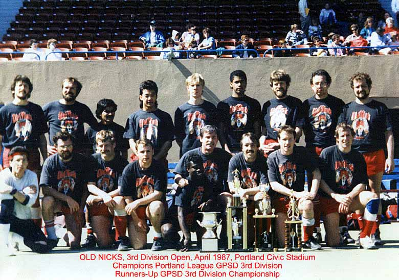
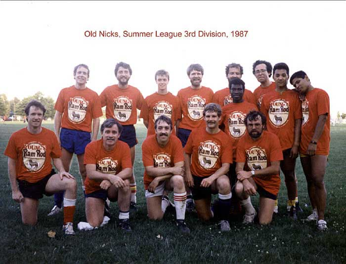
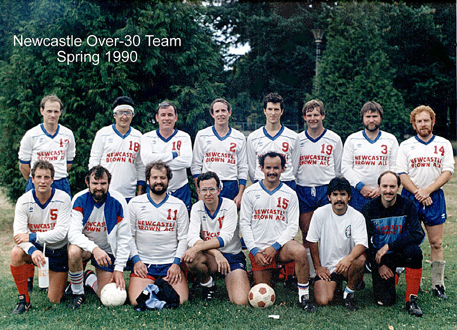
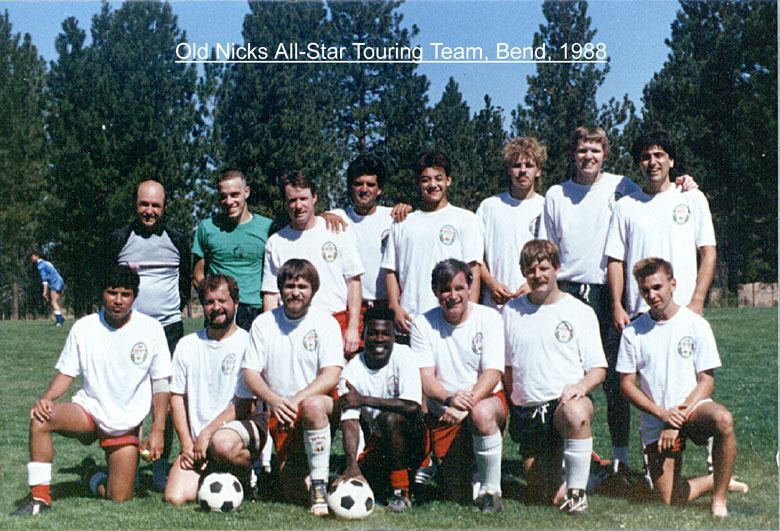
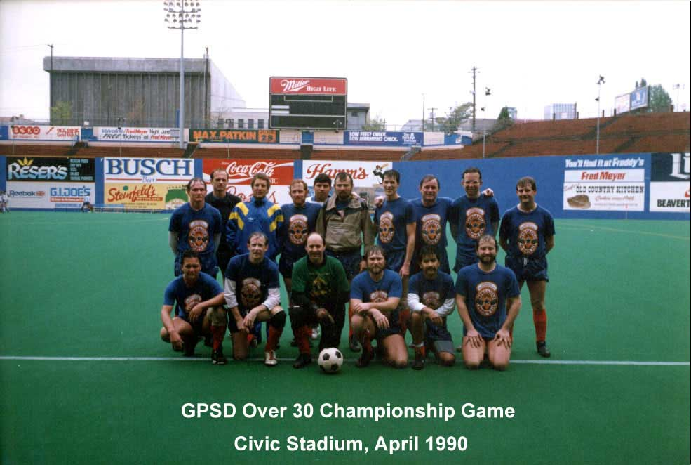

 |
| Our uniforms used to really drive refs crazy back in an era when only referees
wore black. This triumph promoted us to GPSD's 2nd Division Open for Fall 1987 - where we really discovered our limitations. |
 |
| Summer League 1987, before the reality of 2nd Division was brought home to us.
Alex Addy (top row 4th from right) was the previous winter's top scorer in GPSD with 30+ goals. The next winter he was recruited away by a 1st Division GPSD team. |
 |
| This is yet another uniform variation from 1990. The national distributor
of Newcastle Brown Ale ponyed up for nice quality long sleeve shirts. |
 |
| This was our summer barnstorming group, one weekend in Bend Oregon. The local Bend teams put
this tournament on partly so they'd play somebody other than the six teams in their area. |
 |
| 1990 was the last time most of this group played in a Championship Game
at Portland's Civic Stadium (now Providence Park). Note the hideous old Astroturf type playing surface. As I remember, we lost 4-2, but scored 4 goals. Yep- 2 own goals! |